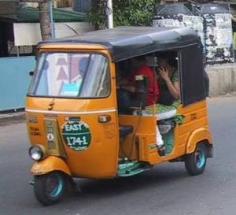
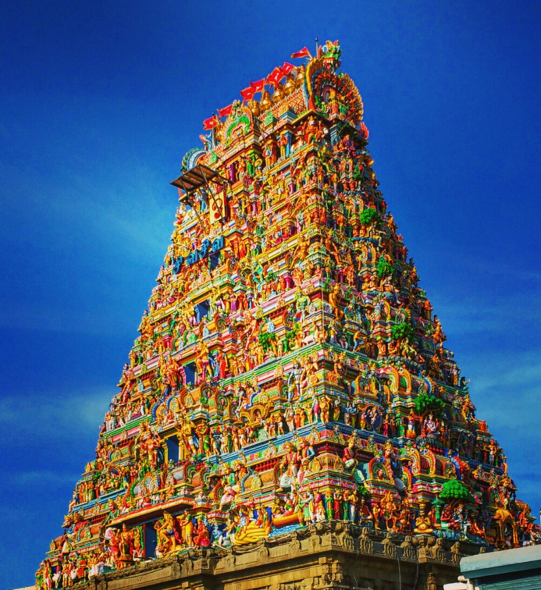
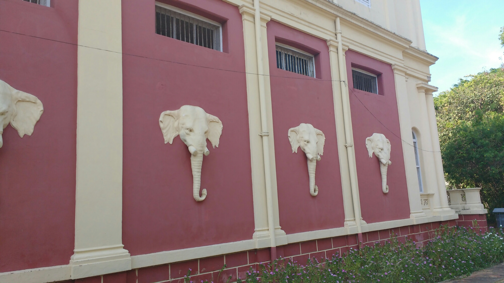
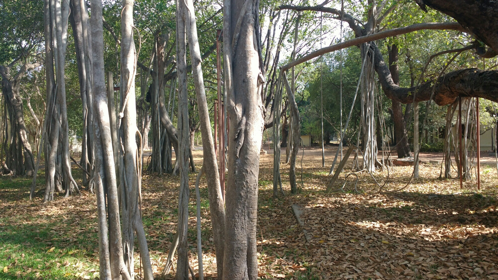
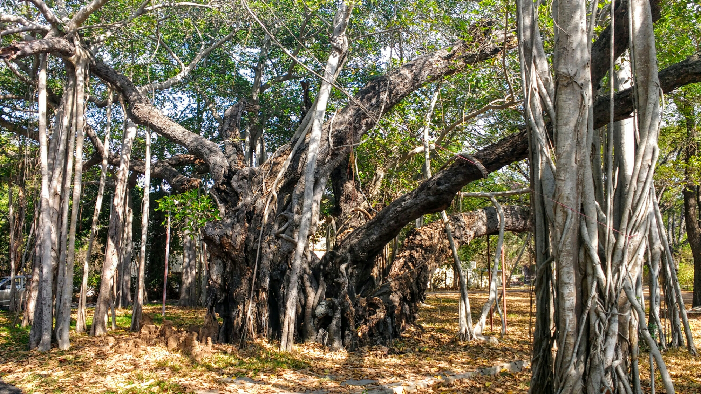

Chapter 1: Journey to The Great Banyan Tree
April 27, 2016
Location: Chennai (capital city of Tamil Nadu, India)
Almost every Westerner I've spoken with who has travelled India has described it as the most beautiful, chaotic, inspiring, and difficult place to travel. My experiences so far have fallen more or less into those categories.
Part of the chaotic nature of India stems from the near-constant sensory overload. Floral scents of no visible origin waft through the humid air, mixing with the asphyxiating smells of exhaust fumes and dust. Cars, buses, and auto rickshaws race at breakneck speeds along small winding roadways, coming within inches of each other at every stop and turn. Horns blare every other second. I walk out along the broken sidewalk, careful to step around the open manhole and over the small yellow lizard basking on a broken chunk of concrete.
As I turn to face the street, I realize in the sticky humidity that I've only been outside thirty seconds and I'm already covered in sweat. Seizing a small lull in the otherwise constant blur of traffic, I hustle across the road to grab a fresh coconut. The woman selling them sits next to a pile, and slices off the top of one before putting a straw in it and handing it to me. I give her a fifty rupee note and finish off the drink before waving down a rickshaw – one of the small yellow deathtraps known by locals as an “auto.”
After a quick exchange of hand gestures and head wobbles, I jump in the back seat and we take off. Weaving aggressively past other cars, the road is a free-for-all, where the larger vehicles move without any apparent regard for the small ones darting around them. After navigating through a short distance of oncoming traffic, we turn onto a quiet street and I remember to breathe. In America, a driver may honk to signify anger or frustration, but the steady stream of beeps in India is more of a safety measure; similar to how a biker might yell “on your left.” Considering the complete disregard for marked lanes, or even the direction of traffic, the honks are necessary.
We enter another main street, nearly running over an old woman in a bright red sari. As we approach a curve in the road, the van ahead of us cuts in, causing us to whip sharply to the side, knocking a motorcyclist and his passenger into the median wall. With both vehicles and their passengers unharmed, everyone speeds on as though nothing happened. The volume of the horns is rivaled only by the yelling match between my driver and the other man (who, much like his two passengers, was not wearing a helmet).
When we arrive, I pay the driver and head into the restaurant. The waiter speaks no English, and knows only the local language, Tamil. After some confusion, we realize that we share a limited knowledge of Hindi, and with some pointing, I order a masala dosa. As I wait, I glance around and notice everyone in the restaurant is staring at me with a pleasant curiosity. An old man sitting by me laughs, and tells me they rarely see white people in this city. The waiter, a young man no older than me, comes over and lays out a banana leaf as my plate. It's larger than a placemat. He pours globs of various sauces from coconut chutney to spiced dhal, directly onto the leaf, before serving the dosa. It's a large rice batter and lentil crepe, crispy and buttered. After using my hand to scoop up the various sauces with the dosa, I order a coffee to wash it all down and get on my way.
I take a cab around the city for the better part of the day, driving around to see what Chennai has to offer. The driver is a short man with graying hair, and a smile so genuine his eyes squint. I initially try to chat with him, but quickly realize he only knows about a dozen English words. He shows me his business card, which has his last name, Ayyavu. Soon, we pull up to the Karanasweerar temple. I open the cab door and immediately take in the rich scent of flowers and sandalwood incense. After staring up a the colorful tower above me, I take off my sandals and go inside. At the shrine of Vishnu I watch the priests, dressed in lungis and covered in decorative chalk. A man recognizes my lack of familiarity with the ritual (or my white skin), and applies a line of white chalk to the center of my forehead, as those around me have done.
I spend some time exploring the temple, and a small young Tamil man in a striped polo points out various sculptures to me, assigning himself as my guide. Despite the fact that I clearly do not want to hustle, he pulls me along with enough insistence to rouse my suspicion. Finally, he informs me the minimum guide fee is 2000 rupees, and tells me to pay up. Not about to pay thirty dollars for a forced tour I didn't ask for, I decide to head back to the car. He follows me the whole way, demanding I give him the money. He even tries to keep me from shutting the cab door as the driver, recognizing the situation, slowly pulls out of the parking area.
We get back on the road, Ayyavu chuckling at what just happened. We make our way to the next destination: The Theosophical Society. Pulling into the dusty parking lot, we walk down the long winding roads among palm trees and termite mounds. I'm looking at the hundreds of bats swarming the trees above when Ayyavu grabs my arm and pulls me towards the center of the path. I look at him in confusion. “Snake,” he says, putting his open hands together, palms facing me in a bowl shape. Sure enough, I turn back and see a King Cobra in the brush a few meters away. Needless to say, we move on. The sun beats down, and I pause and wonder if neglecting to bring either sunglasses or sunscreen to one of the hottest parts of India in the middle of the hot season was a poor decision. Meh.
We reach the center of the Society compound. A red and cream colored building with marble floors. A temple of sorts, but not to any single religion. The walls are lined with depictions of renowned historical and religious figures, from Jesus to Gandhi to Osiris. Below an inscription of the Freemason symbol is the charter, with a list of the countries affiliated.
The Theosophical Society, founded in New York City 1875 (and incorporated here in India in 1905), is a worldwide organization. Its primary object is “Universal Brotherhood without distinction, based on the realization that life and all its diverse forms, human and non-human, is indivisibly One.”
The charter on the wall lists the following objectives:
- To form a nucleus of the Universal Brotherhood of Humanity, without distinction of race, creed, sex, caste or colour.
- To encourage the study of Comparative Religion, Philosophy and Science.
- To investigate unexplained laws of Nature and the powers latent in man.
I did some further investigation and found some admirable ideas held by the society.
“Belief should be the result of individual understanding and intuition, rather than mere acceptance of traditional ideas. It should rest on knowledge and experience, not on assertion. Truth should therefore be sought by study, reflection, meditation, service, purity of life and devotion to high ideals. At the same time, Theosophists respect the different beliefs. They see each religion as an expression of the Divine Wisdom, adapted to the needs of a particular time and place.”
The Dalai Lama visited these grounds as a younger man, and said his time here shifted his entire perspective and approach to life and religion. This comes as no surprise, seeing the global unity involved in the organization. I leave the temple uplifted. The Society may have been forged in a time before the great wars robbed the world of its innocence, but the desire for knowledge and truth remain. A shared mission is often our best means to live in peace, and I would love to see these ideals more integrated into modern society.
These thoughts and others bounce around my head as I leave the temple and meander down the path, shaded by towering palm trees. Soon the palms give way to clusters of other tangled trees extending into the sky, until the forest is made up of only one type.
Then I see it. Gnarled roots and twisted knots of bark form the massive beast that is the central trunk of the Great Banyan Tree. Nearly half a millennium old, this tree has felt mother nature's worst, from earthquakes to tsunamis. Its branches extend well over a hundred feet in every direction (250 feet, I later learn). My eyes follow the path of the branches overhead as they stretch across the treetops, growing back down into the ground and taking root all over the area. It's at this point I realize I'm not in a forest at all: this is all one tree.
I stand there in awe, processing what I'm looking at. It occurs to me that this seems almost purposeful, that the goals of the Theosophical Society are so well reflected by the tree, even though the tree outdates it by a few hundred years. The Theosophists view each religion as a manifestation of the same fundamental truth and wisdom, taking ever different paths to meet the needs of the time. In the same way, the branches and roots of the Great Banyan Tree stand in apparent separation, adapting to find more water and sunlight, yet they grow from a common trunk.
Now, I know you may be reading this and thinking to yourself “oh that was fast. Drew's been in India less than a week and now he's going all spiritual hippie on us.” While I chose empiricism over religion long ago, the existence of the Theosophists is a friendly reminder to us agnostics that religion is not without its merits. The lessons of the Theosophists not lost on me, I walked away from the tree that day with questions:
How can we, in our daily life, maintain the presence of mind in instances of conflict to recognize it, and to focus instead on our common goals (even if that goal is simply a resolution)? How can we more easily remind ourselves that on a broader scale, we're all on the same team? While I wrote an article a while back about similar issues in psychology and communication, there is always more to learn. If anyone is still reading at this point, I'd love to hear what you think about these questions.
